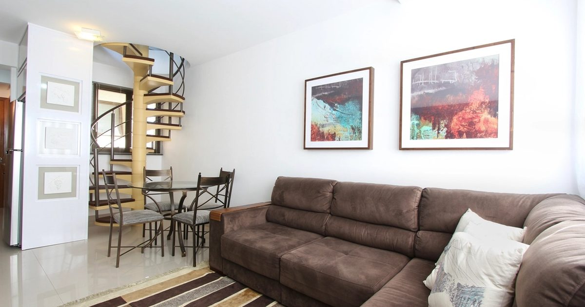

Small-Space Training
Low-Ceiling Workouts: Training When You Can't Reach Overhead
Low ceilings remove a specific and limited set of exercises. The problem is that one of them is the overhead press pattern, which nothing else quite replaces.

Low ceilings are common in converted lofts, basement rooms, older cottages and under-stairs spaces, and they are the one spatial constraint that genuinely removes exercises rather than just making them awkward.
The good news is that the list of casualties is short. The bad news is that it includes the vertical pressing pattern, which is worth replacing deliberately rather than simply dropping.
Measure first
Stand where you train, reach both arms straight overhead, and see what happens. Then note the number.
You need roughly your height plus 60 centimetres to reach comfortably overhead — about 2.4 metres for someone 1.8 metres tall. That is exactly a standard ceiling height, which is why so many people find overhead work borderline rather than impossible.
Below about 2.2 metres, overhead reaching is out. Below about 2.0 metres, some standing exercises become awkward and you will want to plan around it. Remember to add the thickness of your mat, which can be 15 millimetres or more — see exercise mats for noise reduction.
What you actually lose
Four things, and only four:
- Overhead pressing. Pike push-ups with elevated feet, handstand work, anything pressing vertically.
- Anything with a jump. Which you probably were not doing anyway if you live in a flat — see no-jump cardio.
- Overhead reaching in warm-ups and cardio. Arm circles, squat-to-reach, jumping-jack patterns.
- Pull-ups, usually. Discussed below, and not always.
That is a genuinely short list. Note what is not on it.
What you keep
Essentially everything else. All squatting and lunging, all horizontal pushing including every push-up variation, all rowing, all hinging, and all core work. Four of the five movement patterns are entirely unaffected — the patterns are set out in the complete guide to bodyweight strength training.
Since floor exercises are bounded by your height lying down rather than standing, a low-ceilinged room is often perfectly adequate for a full strength session. The measurements are in how much floor space you need.
Replacing the overhead press
This is the one that needs deliberate attention, because the vertical pressing pattern trains the shoulders in a way horizontal pressing does not, and simply doing more push-ups is not a substitute.
Four options, in rough order of how well they work:
1. Seated or kneeling band press. Anchor a band under your knees or feet and press upward from shoulder height. Kneeling reduces your total height by around 60 centimetres, which usually brings the movement back inside the available space. This is the best replacement and needs only a band — see the resistance bands guide.
2. Pike push-up with feet on the floor. The standard floor version needs no more headroom than a push-up, since your head travels toward the floor rather than away from it. Only the feet-elevated version is a problem.
3. Lateral raises. Arms move out to the sides rather than overhead, so they clear a low ceiling comfortably. They train the lateral deltoid directly — see the bodyweight shoulder workout.
4. Incline push-ups with the hands low. Hands on a low surface with the body steeply angled shifts emphasis toward the upper chest and front deltoid. An imperfect substitute, but it moves the emphasis in the right direction.
Almost any standing overhead movement can be performed kneeling, which buys you roughly 60 centimetres of headroom. It also removes the ability to generate force with the legs, which makes the movement stricter and arguably better as a shoulder exercise. Worth trying before concluding an exercise is impossible.
Cardio without overhead reaching
Most low-impact conditioning exercises stay below shoulder height anyway. Fast step-back lunges, continuous squats, lateral skater steps, bear crawls and mountain climbers all work in a low room.
The substitutions you need are for squat-to-reach and jumping-jack patterns. Replace overhead reaching with a forward reach at chest height, which raises the heart rate almost as effectively. The full list is in apartment-friendly HIIT.
Stairs, if you have them, are the best conditioning option in a low-ceilinged home, because the exercise happens in a stairwell that is usually taller than the rooms — see stair workouts.
Pull-up bars and low ceilings
Less of a problem than people assume, because a doorway bar sits in the door frame rather than near the ceiling.
What you need is enough clearance above the bar for your head at the top of the movement — roughly 30 centimetres above the bar. Since standard door frames sit around 2 metres and standard ceilings around 2.4, that usually works even in a low-ceilinged room, provided the doorway itself is standard height.
Where it fails is under a sloping loft ceiling, or with a low door frame in an older property. In that case, horizontal rowing covers the pulling pattern adequately — the options are in rows at home. Fitting and safety considerations are in the doorway pull-up bar guide.
A low-ceiling session
Warm up with forward arm swings rather than overhead circles. Then:
- Bulgarian split squat — 3 × 8–12 each leg
- Push-up — 3 × 8–15
- Row — 3 × 10–15
- Kneeling band press or floor pike push-up — 3 × 8–12
- Single-leg glute bridge — 3 × 10–15 each side
- Dead bug — 3 × 8–12 each side
That covers all five movement patterns with nothing going above head height. Adult guidance asks for strengthening work across all major muscle groups,1 and this clears it without a single overhead repetition.
Sloping ceilings and awkward shapes
Loft conversions and attic rooms have a particular problem that a uniformly low ceiling does not: the available height changes depending on where you stand, which means an exercise that works in one spot is impossible a metre away.
The practical approach is to map the room once rather than rediscovering the constraint every session. Find the spot with maximum headroom, usually along the ridge line, and mark it — a rug edge or a piece of tape is enough. That becomes your standing zone for anything vertical. Then find the longest clear stretch of floor, which in a loft is often across the room rather than along it, and use that for floor work where headroom is irrelevant.
Two things that catch people out. First, light fittings hang below the ceiling, sometimes by 20 or 30 centimetres, and a pendant light in the middle of a low room removes more usable height than the ceiling itself. Second, the roof slope means your arms may clear when your standing position does not — stepping half a metre toward the ridge often converts an impossible movement into a workable one.
Do not treat it as a reason to train less
Worth stating plainly, because a constrained room is an easy excuse and a poor one. Four of the five movement patterns are entirely unaffected by ceiling height, and the fifth has a workable substitute in a kneeling band press.
Adult activity guidance is met by resistance work covering the major muscle groups on two or more days a week,2 and nothing in that specification requires you to be able to reach overhead. A low-ceilinged room limits which exercises you select, not whether the training produces results.
Where to go next
For the wider set of small-space constraints, see the guide to working out in a small apartment. If storage is also tight, see how to store home gym equipment in a tiny flat.
Frequently asked questions
What exercises can I do with a low ceiling?
Almost everything. All squatting, lunging, horizontal pushing, rowing, hinging and core work is unaffected, since floor exercises are bounded by your height lying down. Only overhead pressing, jumping and overhead reaching are genuinely lost.
How high does a ceiling need to be to work out?
Roughly your height plus 60 centimetres for comfortable overhead reaching — about 2.4 metres for someone 1.8 metres tall. Remember to add the thickness of your mat, which can be 15 millimetres or more.
How do I train shoulders with a low ceiling?
A kneeling band press is the best replacement, since kneeling buys roughly 60 centimetres of headroom. Floor pike push-ups also work, because your head travels toward the floor rather than away from it. Lateral raises clear a low ceiling comfortably.
Can I use a pull-up bar with low ceilings?
Usually yes. A doorway bar sits in the door frame rather than near the ceiling, and you need about 30 centimetres of clearance above it. It fails under sloping loft ceilings or with a low door frame in an older property.
What cardio can I do in a low room?
Fast step-back lunges, continuous squats, lateral skater steps, bear crawls and mountain climbers all stay below shoulder height. Replace overhead reaching with a forward reach at chest height. Stairs are the best option if you have them.
Sources and further reading
- World Health Organization. WHO Guidelines on Physical Activity and Sedentary Behaviour. 2020.
- NHS. Strength and Flex exercise plan.
- NHS. Physical activity guidelines for adults aged 19 to 64.
- MedlinePlus, U.S. National Library of Medicine. Exercise and Physical Fitness.
Comments
Comments are not enabled yet. Add a hosted comment embed (Disqus, Commento, Giscus) inside this container when you are ready.